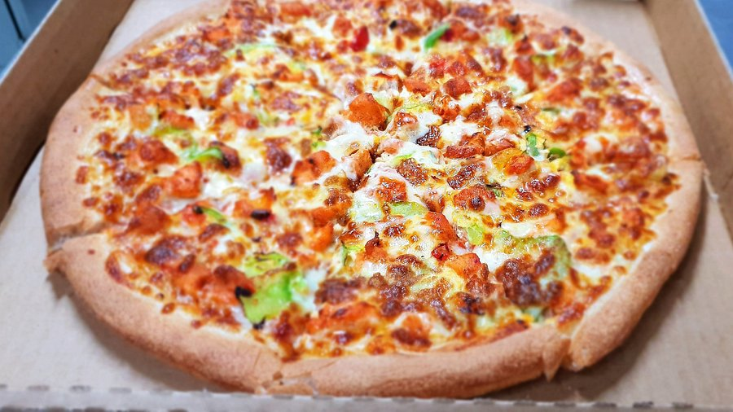

Home
Pizza Dough

Description
This pizza dough makes a soft and fluffy crust on the inside with a slightly crispy outside. It is easy to prepare and perfect for homemade pizza with your favorite toppings.
Ingredients
- 1 ½ cups warm water
- 2 ¼ teaspoons active dry yeast
- ½ teaspoon brown sugar
- 2 tablespoons olive oil
- 1 teaspoon salt
- 3 ⅓ cups all-purpose flour
Steps
- Gather all ingredients.
- Mix warm water, yeast, and brown sugar in a bowl and let sit for 10 minutes.
- Add olive oil and salt to the mixture.
- Mix in part of the flour until combined.
- Knead the dough and gradually add remaining flour.
- Place dough in an oiled bowl.
- Cover and let it rise for about 1 hour.
- Punch down the dough and shape it.
- Bake with toppings at 220°C until golden.